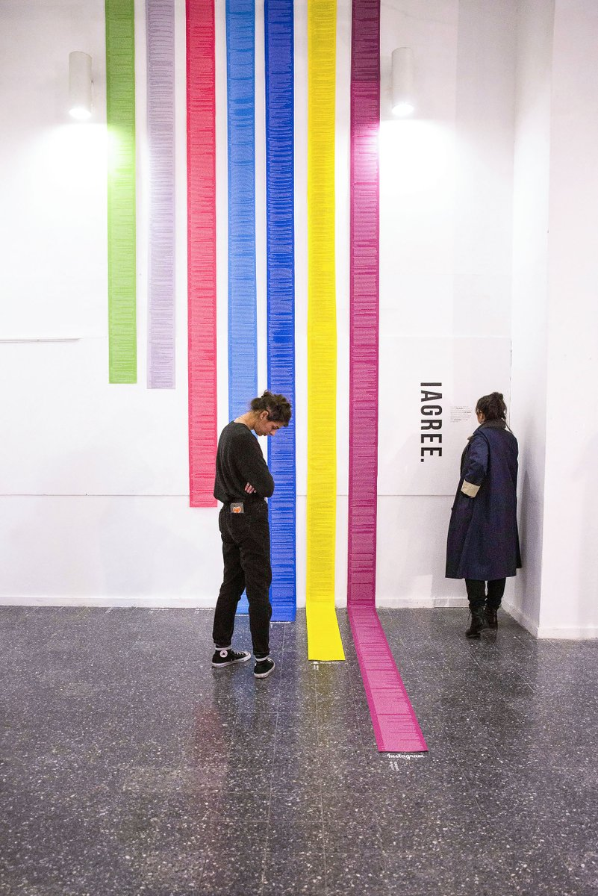

Definitions
What is “data visualization�
Data visualizations any effort to help people understand the significance of data by placing it in a visual context.
- data visualization is the work of turning data into visuals
- making stuff to add clarity when you have a lot of, or very complex data
- making number real for readers
This includes:
- 📊 charts
- 📈 graphics
- 🗺 maps
- 💻 interactive databases
- 🨠hand-drawn illustrations
What did it look like?
In the 1850s, cholera was a mystery 🤒
- a physician, John Snow, made a “dot distribution map†of the outbreak in London
- his map reveals that cases clustered around a public water pump
- eventually, concluded that disease was spread by contaminated water

What does it look like now?
Now it looks like this:
Trump’s Lies: NYT tracked every certifiable lie told by the president

Gender pay gap: The Guardian looks at the calendar day when companies, in effect, stop paying women
Age of Olympic athletes: FiveThirtyEight breaks down the average age of Olympic athletes by sport (“old Olympians ride horses; young ones do flips”)
Something these all have in common
- 🤓 precision, accuracy
- 🔠clear analysis, fits with rest of reporting
- but: tbh…can a little cold
But it can also look like …
If the point of data visualization is to remove the work from understanding and interpreting data for people, then data visualization can also look like something made by a person.
Some examples:
Mona Chalabi: @monachalabi (IG/Twitter)
Dear Data: @_deardata
Jose Duarte: data visualizations in the wild
Dima Yarovinsky: Visualization of the terms and conditions for different apps

We should talk quickly about data
- data can be a collection of almost anything
- data can be found in:
- city budgets
- regional test scores
- financial data
- data can also be found in your daily life:
- the length and mode of your morning commute
- the timing of your daily coffee intake
- the songs you listened to on Spotify
- we record data, often, in spreadsheet
- each row (across) is a data point, one thing
- each column (up/down) is a category, a variable, a bucket
- the first row: a “column header†– the labels that describe what each column contains
How do we create data visualizations?
The process:
- 🤔 start with a focusing question
- 📓 collect + analyze
- 📠sketch some ideas
- 🨠create something cool (ğŸ˜)
🤔 Data visualizations can start anywhere. But the best place to start is with a question.
- How much money did the city of Toronto spend on pop-up shelters this winter?
- What school in Ontario had the lowest score on standardized testing over the last decade?
- What genre of music do I listen to most?
- What’s the gender breakdown of my most played tracks?
📓 Build a dataset using data from your life
- each row is one data point
- for example, one song or cup of coffee
- populate your sheet (up to 10 rows)
…here’s what my data looks like:
…and here’s what it looks like in a table
| title | artist_name |
|---|---|
| TEMPTATION | Joey Bada$$ |
| Rush | Lewis Capaldi feat. Jessie Reyez |
| Too Many Colors | Twin Shadow |
| Lost | Dermot Kennedy |
| Back In My Body | Maggie Rogers |
| For Island Fires and Family | Dermot Kennedy |
| Peaks & Valleys | Dan Mangan |
| The King | Matt Holubowski |
| My Backwards Walk | Frightened Rabbit |
| Dancing With Our Hands Tied | Taylor Swift |
| The Call | Backstreet Boys |
This is a great place to start.
I have rows, I have columns. But in order to visualize this data in any meaningful way, I need more information about each song. I need attributes.
🔠What are some other pieces of data I might collect?
| title | artist_name | release_date | gender_of_artist | genre |
|---|---|---|---|---|
| TEMPTATION | Joey Bada$$ | 2017 | MALE | hip hop |
| Rush | Lewis Capaldi feat. Jessie Reyez | 2018 | MALE, FEMALE | pop |
| Too Many Colors | Twin Shadow | 2018 | MALE | chillwave |
| Lost | Dermot Kennedy | 2019 | MALE | new folk |
| Back In My Body | Maggie Rogers | 2019 | FEMALE | pop |
| For Island Fires and Family | Dermot Kennedy | 2019 | MALE | new folk |
| Peaks & Valleys | Dan Mangan | 2018 | MALE | indie |
| The King | Matt Holubowski | 2016 | MALE | folk |
| My Backwards Walk | Frightened Rabbit | 2007 | MALE | folk |
| Dancing With Our Hands Tied | Taylor Swift | 2017 | FEMALE | pop |
| The Call | Backstreet Boys | 2000 | MALE | pop |
📠Now, take a sheet of paper, folder it into quarters.
Start with some questions for the data:
- What genre shows up most often? (How can I represent this genre?)
- What is the distribution of years these songs were released? (What’s the most popular year/decade)
- What % of artists are female? (How can I represent gender in music?)
Try to answer a question. Try to think of four different ways to visualize your data.
[ INSERT SKETCH ]
🨠Pick your favorite sketch. Expand it to a full concept.
🔠What did you make? And what did it reveal about your data?